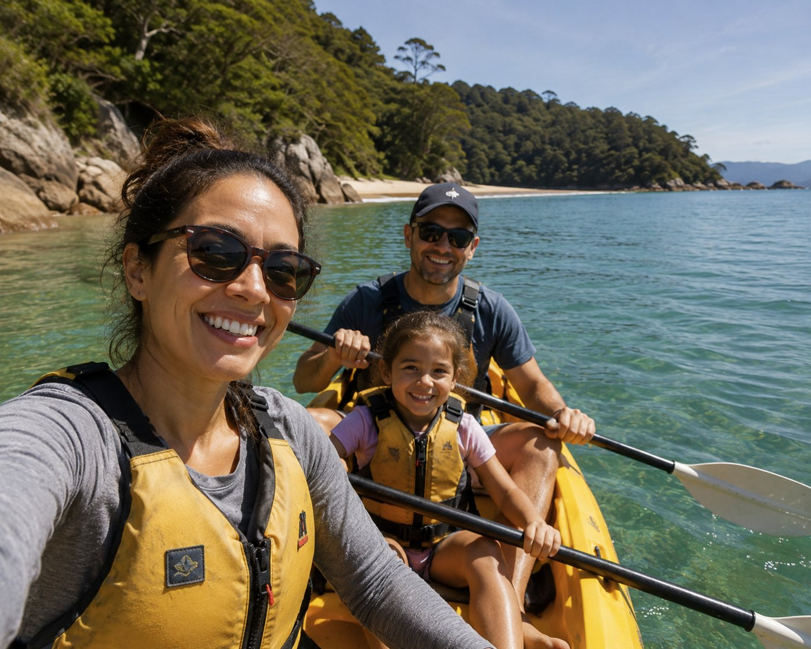
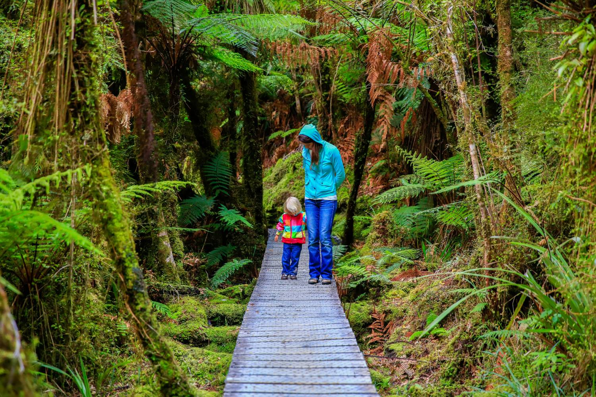
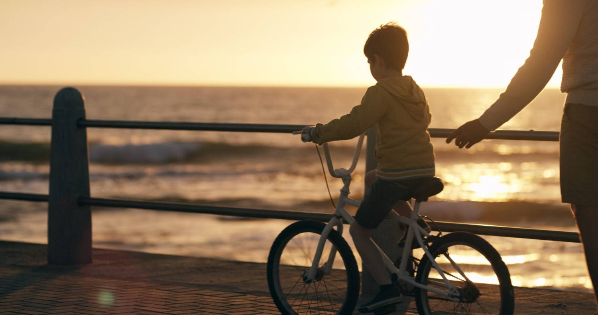
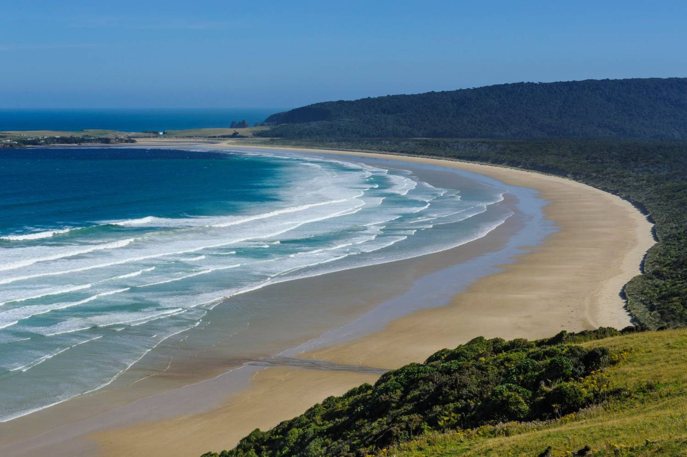

Is New Zealand right for me and my family?
Before the visas and job offers, the bigger question: could you build a good life here? An honest look at the joys and the trade-offs.
Turn this guide into your own checklist
This guide covers everything about moving to New Zealand. Answer two questions, where you’re considering, and who’s actually moving, and we’ll build the checklist that applies to your household, with your ticks and notes saved in your browser.
This is a life decision first, and a career decision second
Almost everyone we work with starts here, long before registration or jobs: wondering whether your family could be happier somewhere with more space, more time and a slower pace.

So let’s take the pressure off. You don’t need to decide anything today. The goal of this first step is to help you picture the life honestly: what a normal week might feel like, what your children’s days could look like, what you’d gain, and what you’d be leaving behind. The clearer that picture, the easier every decision after it becomes.
At Ethicare, we always say the same thing: the people who settle best are the ones who moved with their eyes open. They knew why they were coming, and they knew what they were trading. That’s all this step is really about.

The things people tell us mattered most
Few people move to New Zealand for the salary. These are the things healthcare professionals say they were actually weighing up, and the things they value most once they’ve arrived.



Work-life balance
The most common reflection we hear is that people feel they get their time back, for family, the outdoors and switching off at the end of a shift. Hours and on-call culture are often gentler than people expect.
A good place to raise a family
Safe communities, good state schools and easy access to nature are, again and again, the reasons families decide to stay. Childhood here tends to involve a lot of being outside.
The outdoors, every day
Beaches, bush, lakes and mountains are rarely more than a short drive away. For many, time outside stops being something saved for annual leave and becomes part of ordinary life.
Rewarding clinical practice
A modern system spanning public and private care, with the chance to know your patients and your team. Many describe practising in a way that feels less rushed and more human.
Cost of living, told straight
New Zealand is not a cheap country, and housing in the bigger cities is the part that surprises people most. Salaries are fair, but it pays to plan around real numbers rather than hope.
Community & welcome
People often arrive expecting it to feel far away and find, instead, that they’re folded in quickly, by colleagues, neighbours and other families who’ve made the same move.
A decision for the whole family
With a partner or children this is not your decision alone, and the families who settle best tend to be the ones who made it together. The questions worth talking through early, around your own kitchen table.


Your partner’s work & world
Will they be able to work here, and would they want to? Many partner visas allow open work rights. Just as important is whether they’ll find their own footing: friends, purpose, a routine that’s theirs.
Your children, at their age
A four-year-old and a fourteen-year-old experience a move very differently. Younger children usually settle fast; teenagers may need more time and more say. Schooling is generally welcoming and easy to access.
The people you’d leave
Distance from grandparents and old friends is the hardest part for most families, and it’s worth naming honestly. It doesn’t have to be a dealbreaker, but it should be part of the conversation, not a surprise later.

New Zealand shaped my own family’s story, so I won’t pretend it’s a fairy tale. There were days I missed home badly. But what I’d say to anyone weighing this up is: don’t wait to feel completely certain. Nobody does. Picture the ordinary days, not just the highlights, the school run, the weekend, the quiet Tuesday, and ask whether that life feels like yours. If it does, the rest is just steps, and you won’t be taking them alone.
SophieCEO & Founder, Ethicare Resourcing

The question isn’t whether New Zealand is beautiful. It’s whether an ordinary Tuesday here feels like yours.
Not the holiday version. The school run, the supermarket, the ride home while it’s still light. That’s the life you’d actually be choosing, and it’s the one worth picturing honestly.
The trade-offs worth knowing
A move this big always costs something. None of these are reasons not to come, but knowing them now is how you avoid being caught off guard later.
It’s a long way from home
Flights back are long and not cheap. For close families, the distance is the thing that takes most getting used to. Plan for how you’ll stay connected.
Housing can be expensive
Especially in Auckland. Rent and house prices surprise many newcomers, so it’s worth modelling your real budget before you fall in love with a postcode.
You’re starting over, socially
New colleagues, new systems, new admin. Most people find their feet within a few months, but the first stretch asks for patience and a bit of courage.
Some things move slowly
Registration, paperwork and setting up a life take time. It’s all very doable, it just rewards starting early and not rushing the big decisions.
What often surprises people
The things newcomers mention again and again: observations, not sales pitches.
How much you’re outdoors
The coast, bush and tracks are so close that being outside becomes a normal part of the week, not a special occasion.
The short commutes
Outside Auckland especially, getting to work is often a matter of minutes, and that time goes back into life.
How much community matters
Smaller towns and tight teams mean people look out for each other; it’s often what makes the move stick.
How different healthcare feels
A different pace and culture of care, it takes a little adjustment, and most people come to value it.
How to tell if this might be your move
There’s no scorecard, and no right answer. But after years of these conversations, a few honest patterns tend to show up.
This could be a good fit if…
- You want more time with family more than you want a bigger pay packet.
- The outdoors, space and a slower pace appeal to you.
- You’re open to a fresh start and a bit of early uncertainty.
- Your partner is part of the dream, not just along for it.
- You’d value rewarding clinical work over a big-city career race.
It may not be the right time if…
- Being close to ageing parents is non-negotiable right now.
- You’d struggle with the cost of housing in a major city.
- A teenager at a decisive stage isn’t ready, and can’t be brought along.
- You’re hoping the move alone will fix something at home.
- You need certainty before you can take any first step.
The things people ask us first
Will my partner be able to work?
In many cases, yes. Partners of skilled migrants are often eligible for open work visas, which allow them to work for any employer. The bigger question is usually about their world rather than their visa, finding their own purpose and people. We’re happy to talk through what’s realistic for your situation.
Will my children settle?
Most do, and often faster than their parents. New Zealand schools are generally welcoming to new arrivals, and childhood here involves a lot of outdoor time and sport, which helps children find their feet. Younger children tend to settle within weeks; teenagers usually need more time and more involvement in the decision.
Is it expensive to live there?
It’s honest to say New Zealand isn’t cheap, and housing in the larger cities is the part that surprises people most. That said, salaries are fair and many families find the trade, more time and space for a simpler kind of life, is exactly what they were after. We’d always encourage planning around real numbers, which the cost-of-living and destination guides can help with.
How far is it really from home?
Far. There’s no softening that. Long-haul flights and the cost of them are the genuine downside for close families. Many people manage it well with planned trips home and regular calls, but it’s worth being clear-eyed about before you decide, rather than discovering it afterwards.
Do I need to decide now?
Not at all. This first step is just about exploring honestly. Plenty of people sit with it for months, talk it over as a family, and only then start looking at the practical side. When you’re ready, the next steps are clear, and you won’t be working through them alone.
Read a little deeper
Ready to explore what this could look like?
You don’t need to have all the answers today. Whether you’re seriously considering the move or curious about whether it could work for your family, we’re glad to talk it through. Honest advice, practical guidance, and no obligation, wherever you are in your thinking.
Ethicare Resourcing · your guide to a life and career in New Zealand.